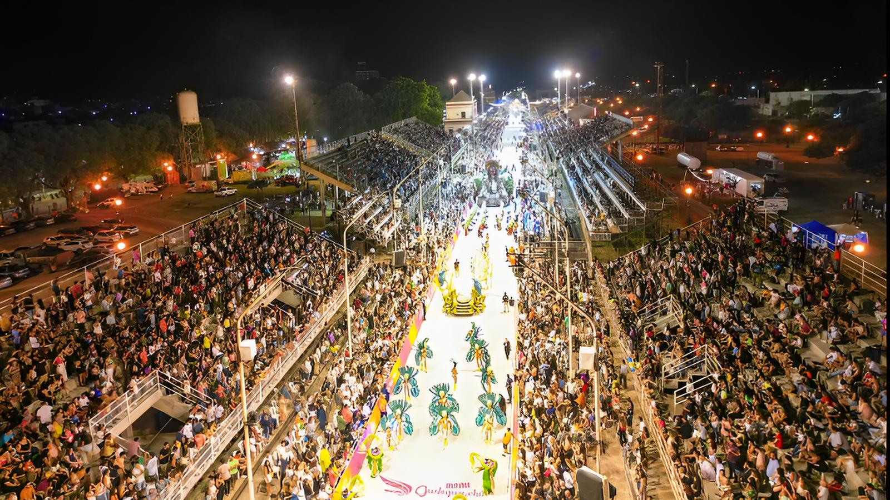

Gualeguaychú: naturaleza y carnaval
Ubicada en la provincia de Entre Ríos, a orillas del río Gualeguaychú, esta ciudad es famosa por dos cosas: su naturaleza encantadora y su carnaval, uno de los más importantes de toda Argentina. Es un destino ideal tanto para quienes buscan descansar en contacto con el agua y el verde, como para los que disfrutan de la fiesta, el color y la alegría.
Durante el verano, la costanera se llena de vida: hay playas sobre el río, campings, bares al aire libre y actividades acuáticas como kayak, paseos en lancha y pesca. Las termas de la ciudad también son un gran atractivo, perfectas para relajarse después de un día de calor.
Pero el verdadero protagonista es el Carnaval del País. Cada fin de semana de enero y febrero, las comparsas desfilan por el Corsódromo con trajes brillantes, carrozas gigantes y música contagiosa. Es una experiencia llena de energía, donde la gente baila, canta y disfruta hasta la madrugada. Gualeguaychú se transforma en una gran fiesta que no tiene nada que envidiarle a Río de Janeiro.
Ya sea para desconectarte en la naturaleza o vivir una de las celebraciones más alegres del país, Gualeguaychú siempre tiene algo para ofrecer. Y si vas una vez, seguro vas a querer volver.
← Volver a Categorías